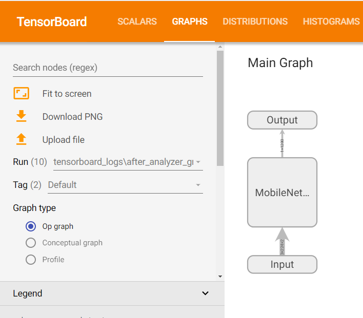
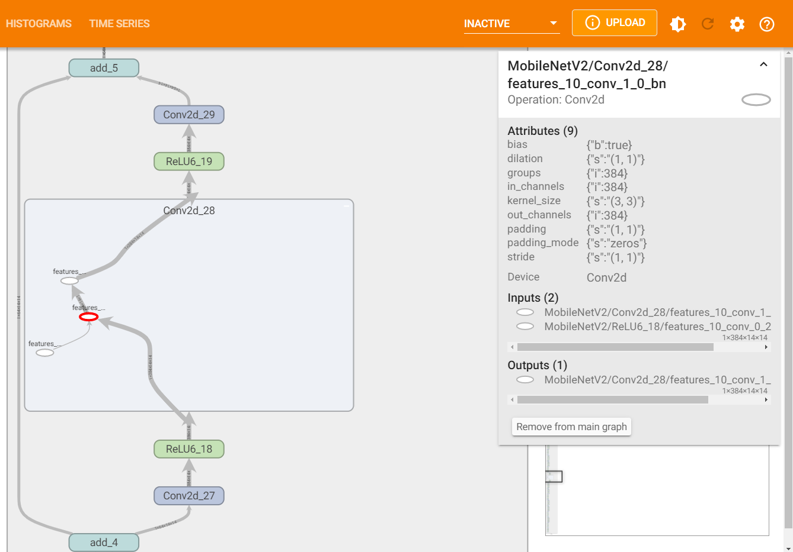
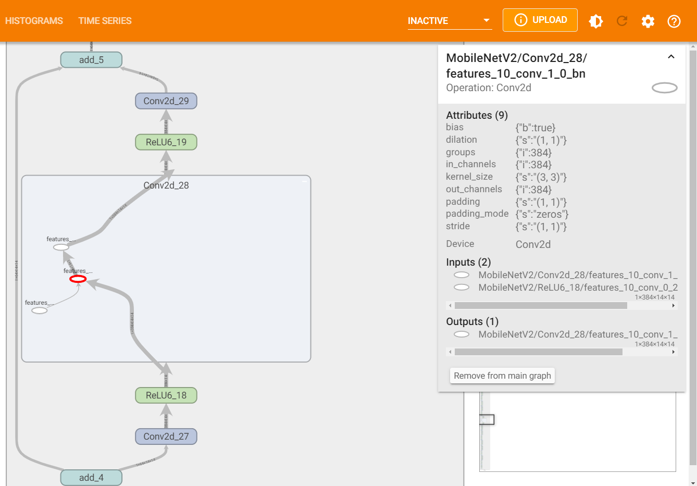
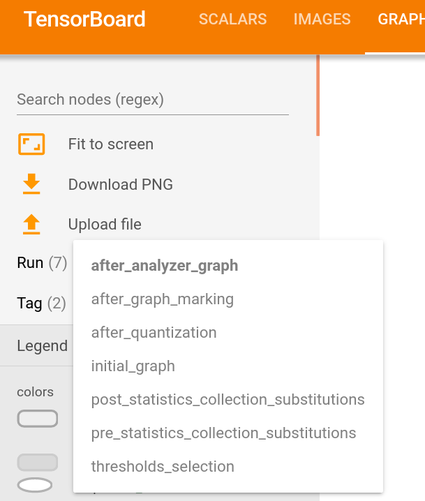
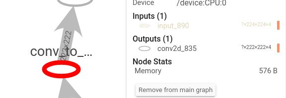
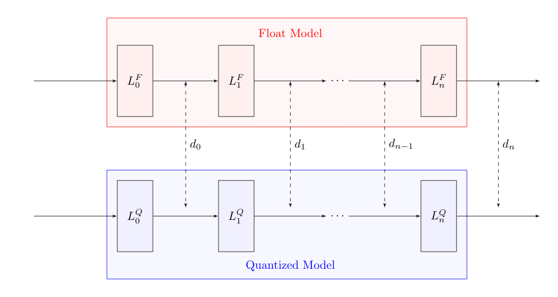
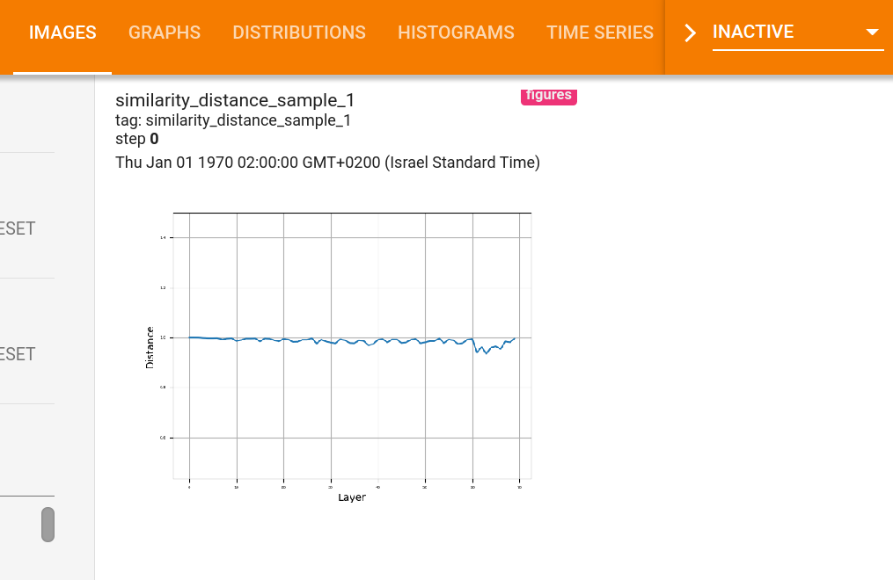

Visualization within TensorBoard¶
One may log various graphs and data collected in different phases of the model quantization and display them within the Tensorboard UI. To use it, all you have to do is to set a logger path. Setting a path is done by calling set_log_folder.
import model_compression_toolkit as mct
mct.set_log_folder('/logger/dir/path')
Then, by calling keras_post_training_quantization, a TensorBoard writer will log graphs of the model at different stages. To visualize them, TensorBoard should be launched with:
tensorboard –logdir=/logger/dir/path
The graphs representing the model can be seen under the Graphs tab:
{kind=link}
Clicking on the Main Graph blocks will open a deeper view of the graph:
 

{kind=link}
To observe the model at different stages of the quantization process, change the ‘Run’:
{kind=link}
To display the required memory (in bytes) of the graph at different stages, change the ‘Tag’ from ‘Default’ to ‘Resources’

By clicking a node, its statistics will show up:
{kind=link}
During the quantization process, statistics are gathered at some layers’ output: histograms, min/max per channel and mean per channel. These statistics can be viewed under ‘Histograms’ (histograms) or ‘Scalars’ (min/max/mean per channel) for each layer that statistics were gathered in its output:


Cosine Similarity Comparison¶
Computing a cosine-similarity is a way to quantify the similarity between two vectors. Mathematically, the cosine similarity is the division between the dot product of the vectors and the product of the euclidean norms of each vector. Thus, we can use it to measure the two models similarity, by measuring the cosine similarity of tensors along the networks in different pairs of points in the networks, where we would expect them to output similar tensors.
There are many ways to measure similarity between two models (or tensors). To name a few: MSE, MAE, KL-Divergence, etc. As for now, mct uses cosine-similarity to compare the tensors along the models and display its changes within the TensorBoard UI.
Several plots comparing the cosine similarity between the original float model and the final quantized model at different points can be viewed under ‘Images’. More specifically, 20 samples from the provided representative dataset generator, are inserted to both of the models, and the cosine similarity at the output of different layers are computed and displayed.
{kind=link}
Mixed-precision Configuration Bit-width¶
When running mixed-precision quantization, it is possible to present the chosen bit-width configuration for each configurable layer of the model using tensorboard. The figures can be viewed under ‘Images’. For instance, when running mixed-precision quantization on MobileNetV2 for both weights and activation quantization we would expect to get the following figures (the first one displaying the activation configuration and the second one the weights configuration):